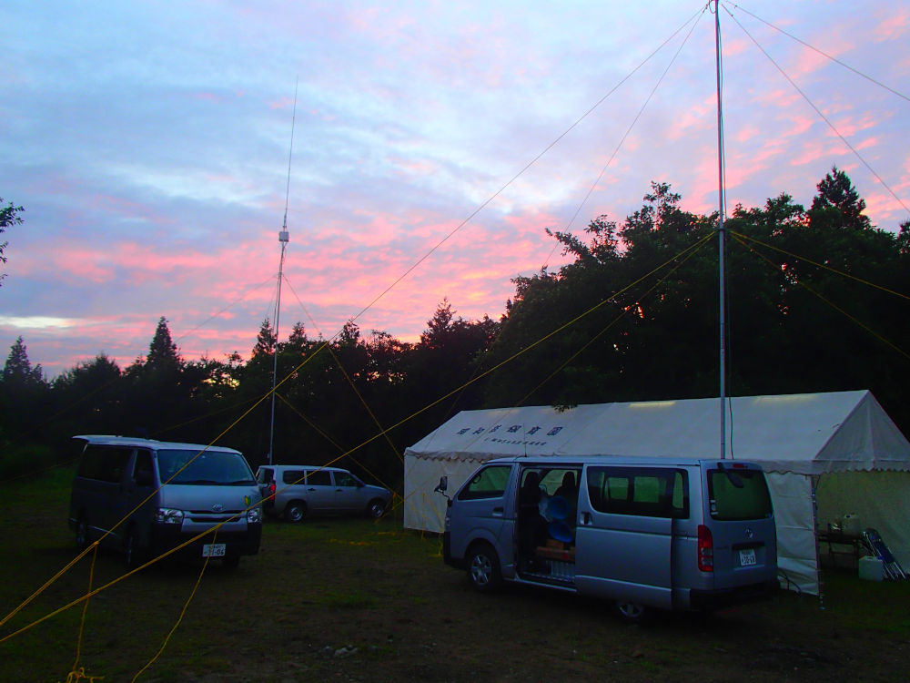

6m and down Contest 2019
広報のJS2GPRです。去る7月6日~7日に開催された6m and downコンテストに今年も参加して参りましたのでご報告します。
YKAでは「6d(ろくした)」と呼ばれているこのコンテストは、当局が1年間を通して最も力を入れている企画です。6dに向けた会議は昨年度の2月から進められ、今年の移動運用地はどこにするだとか、誰がどのバンドを担当するだとか、綿密に計画が立てられます。実際3月にあった東海QSOコンテストも、新2年生にとっては6dに向けた移動運用に関する知識の総ざらいといった面が強いものでした。
さて、思い返してみれば今年の6dは、準備~当日に至るまで高いハードルの連続でした。まず特に車のドライバーにおいて顕著に見られる慢性的な人手不足、また1日目の土曜日が大学側指定の補講日とバッティング(しかも、その情報が本当に直前まで開示されない……)、さらには7月上旬の全国的な悪天候……よくもまあ、例年通り全員無傷で移動運用を完遂できたなあと感じます。2年生の奔走もさることながら、入会時既に3アマを所持していた1年生の皆さんの活躍も大きかったことと思います。 例年通りならまだ従事者免許を持っていない1年生は6dではオペ以外(発電機管理、炊事等)の面で手伝ってもらうのですが、今年からはオペのシフトに彼らも組み込み、実際にコンテストの交信を積極的に聞いてもらう機会も設けました。フォネティックコードの聞き取り等、まだ未経験者の方にもいい機会になったことと思うので、1年生にとっての6dを少しでも楽しいものとするために来年以降もこの流れで行きたいですね。
6d終了をもって2019年度前期のYKAの活動はひと段落といった感じです。会員各位まずは7月末からの大学の期末試験に向けて頑張りましょう。 また、試験明けのフィールドデーコンテストにも参加する予定ですので、各局その折にも交信よろしくお願いします。
それでは報告はここまでにしまして、失礼します。お読みいただきありがとうございました！

de JS2GPR